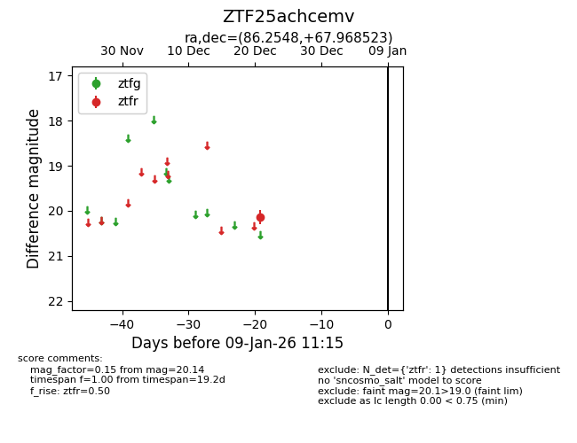
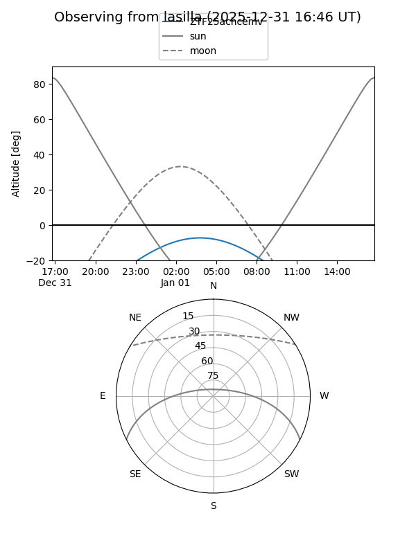
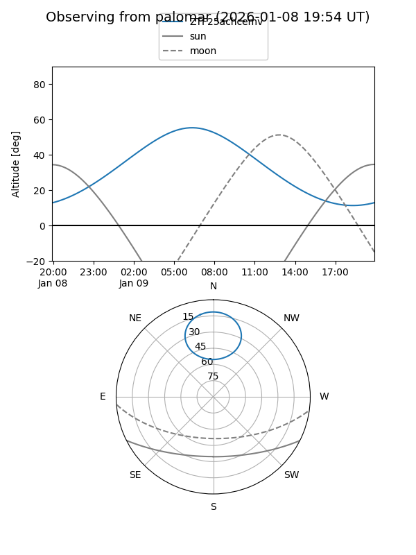

ZTF25achcemv
Target ZTF25achcemv at 2025-12-31 18:00
Aliases and brokers:
FINK: link
Lasair: link
ALeRCE: link
alt names
ZTF25achcemv (ztf,fink_ztf)
Coordinates:
equatorial (ra, dec) = 86.2548,+67.96852
equatorial (HMS+DMS) = 05:45:01.16,+67:58:06.68
galactic (l, b) = (145.2919,+19.10402)
Flags:
Photometry:
last ztfr=20.14
1 ztfr detections
Lightcurve

Visibility


Additional plots